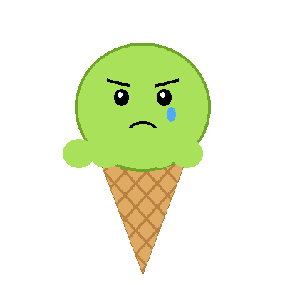
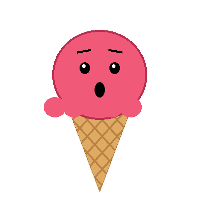
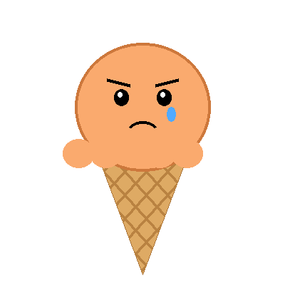
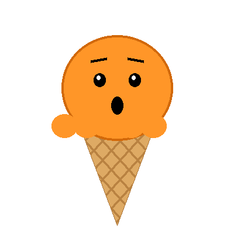
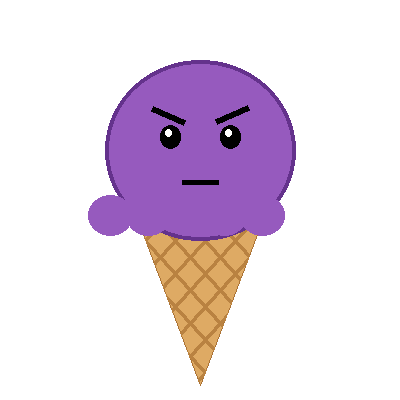

AVISO: Por motivos legales, Don Cocardo no está atendiendo. La heladería ahora la administra su ex aliada, Cereza.
Bienvenidos a lo de Cocardo
Don Cocardo era un humilde vendedor de frutas hasta que se fundió. Para salir adelante abrió esta heladería junto a su socia Lima. Un día Lima quedó encerrada "sin querer" en el freezer... y Cocardo descubrió que las frutas congeladas daban los mejores helados del barrio. Desde entonces, cada sabor tiene su propia historia (y su propia investigación policial).
Nuestros sabores

Lima
Nuestro primer sabor. La receta es de Lima, la ex socia de Cocardo, que desapareció misteriosamente cerca del freezer el mismo día que lo lanzamos. Pura coincidencia.

Fresa
Fresita entró a preguntar si había trabajo y nunca más salió. Eso sí: el helado quedó riquísimo.

Durazno
Duraznita fue vista por última vez entrando al depósito. Dulce, suave y con mucho misterio.

Naranja
Lleno de vitamina C... y de preguntas sin responder. No le preguntes a Cocardo de dónde lo sacó.

Uva (AGOTADO)
Sin stock: se escapó del freezer. Si la ves, avisanos. Ofrecemos recompensa en helado.
Piña (edición limitada)
La empresaria Piña quería fabricar nuestros helados a escala industrial. Terminó siendo parte de la producción.
Últimas noticias de la heladería
- Cereza encontró "mercadería sospechosa" en el depósito y Don Cocardo terminó preso.
- Cereza es la nueva gerente de la heladería (y jura que no sabe nada del freezer).
- Banana, el detective del barrio, sigue investigando la desaparición de las frutas.
- Uva fue vista corriendo por la avenida, toda descongelada.
Horarios
- Lunes a jueves: 14:00 a 22:00
- Viernes y sábado: 12:00 a 00:00
- Domingo: cerrado (día de visita en la cárcel)
Promociones del mes
- Martes de sabor misterioso: 2x1 en el sabor que salga del freezer del fondo.
- Si encontrás a Uva, te regalamos 1 kg de helado.
- Firmá la petición "Liberen a Cocardo" y llevate un cucurucho gratis.